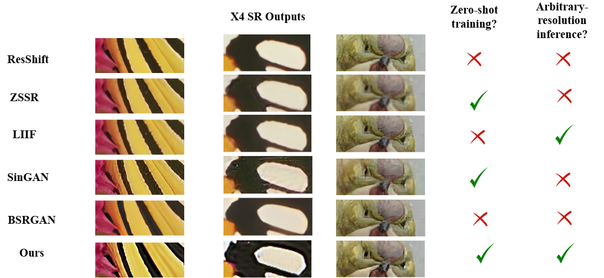

Model Comparison
Model Inference

Try it Out

Abstract
Super-resolution (SR) techniques have made significant strides with the advent of diffusion models, yet these methods are often data-hungry, computationally intensive, and struggle with real-world degradations. In this work, we propose a novel zero-shot super-resolution framework that leverages diffusion models without the need for extensive datasets. Our approach addresses the limitations of current diffusion-based models, particularly their reliance on heavy architectures like UNet, which require significant computational resources and long training times. By adopting a fully convolutional ConvNeXt architecture, we eliminate the need for attention layers, thus reducing memory overhead and speeding up training, while still achieving results with high fidelity and perceptual quality. We introduce a multi-scale training strategy using a single image, where pseudo high-resolution (HR) and low-resolution (LR) pairs are generated through a combination of unsharp masking and controlled degradation. The proposed training pipeline involves step-wise tuning across scales, enabling efficient convergence. Unlike traditional approaches that are limited to fixed upscaling factors, our method supports high-quality arbitrary scale super-resolution by gradually increasing resolution during inference. Our model achieves competitive results in real-world scenarios with complex degradations, advancing zero-shot super-resolution with minimal data and computation.